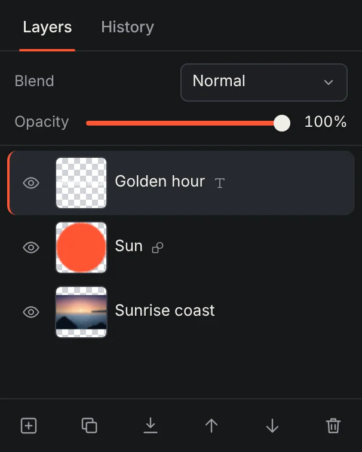
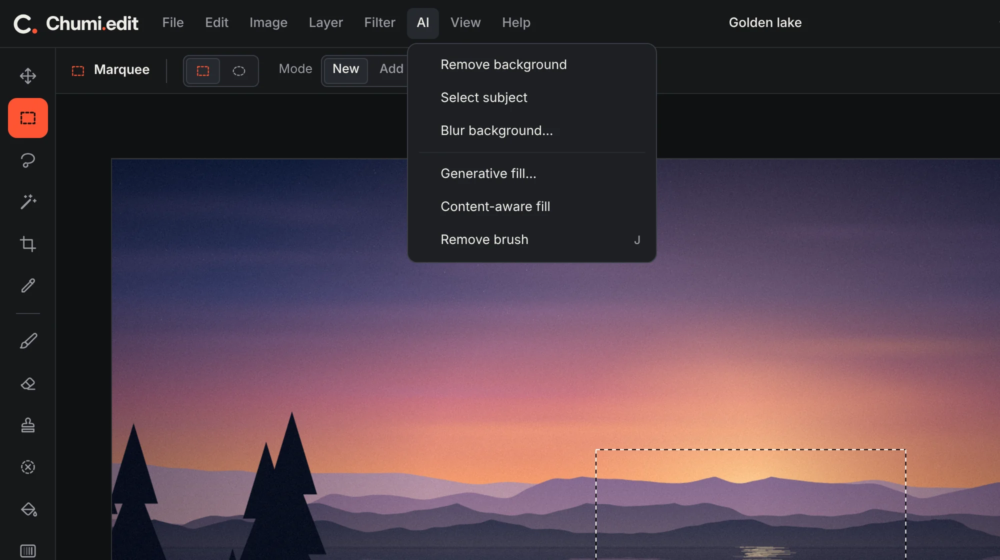
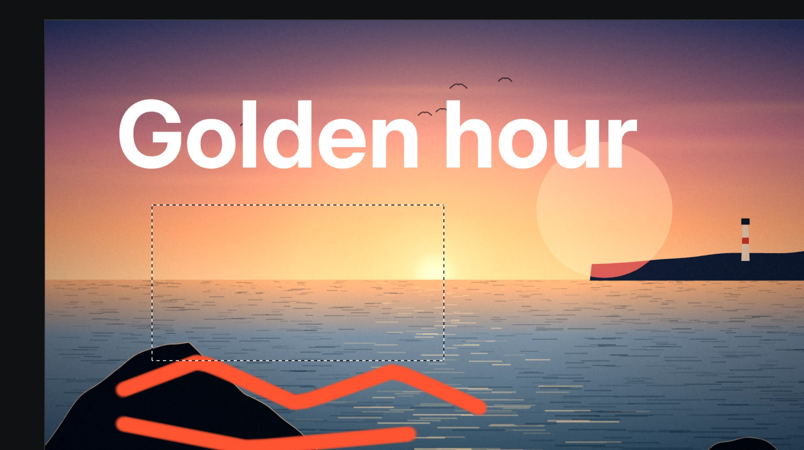
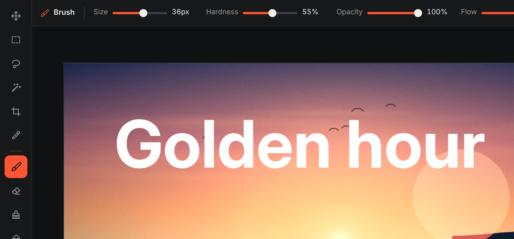
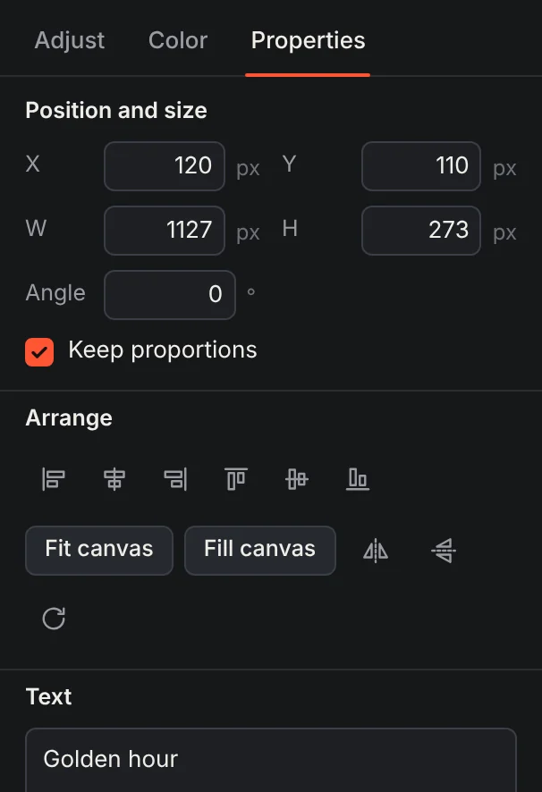
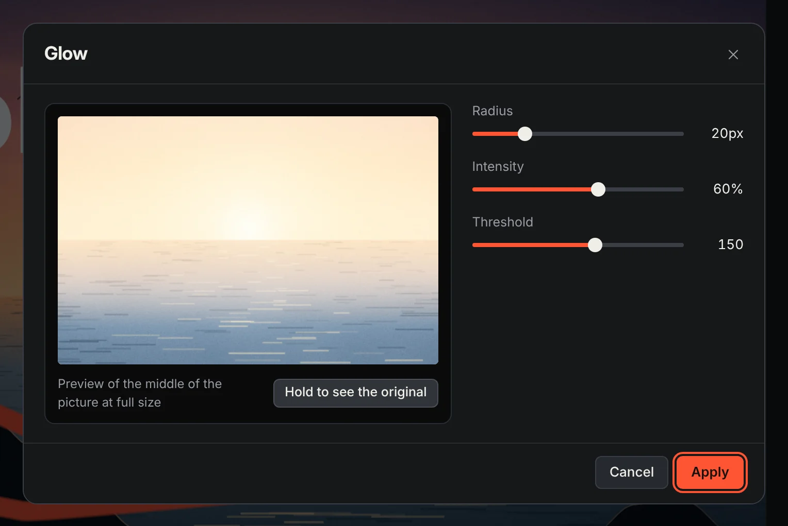
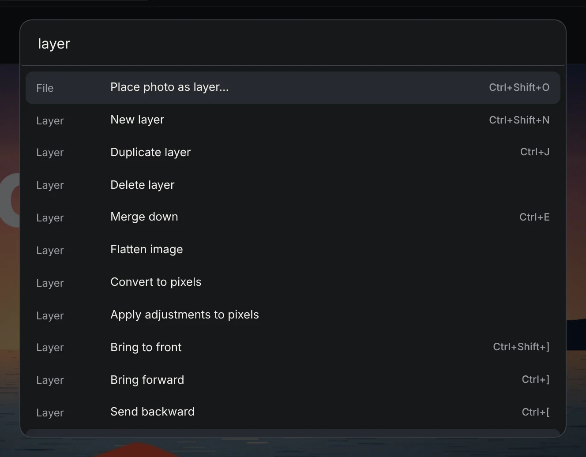
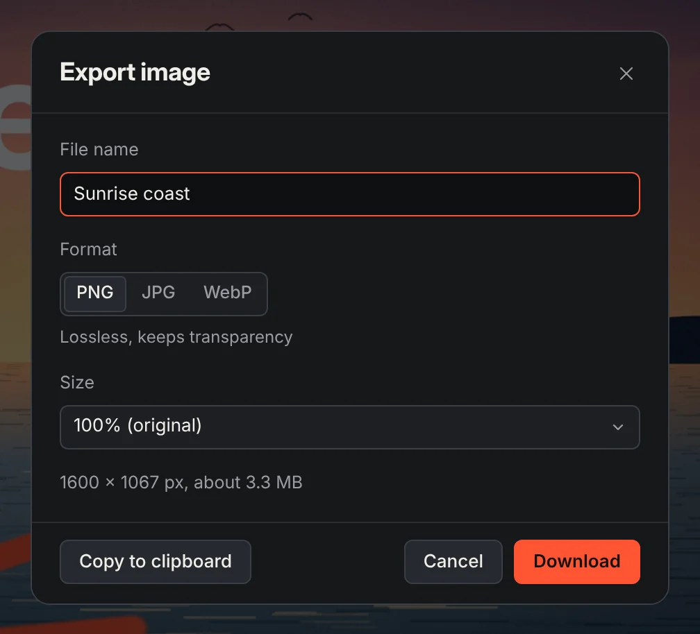

Every tool you expect.
Smart tools, selections, brushes, type, filters and export, all in one window, and all of them a keystroke away.
Layers, brushes, type, color tools and smart tools like remove background. Free to use, and your pictures stay on your device by default.
Open any of these in the editor with one click, then try the tools on it.
Exposure, contrast, warmth and color are the same sliders you get in the editor. Scroll and watch them work.
Every edit lives on its own layer. Drag to reorder, tap the eye to hide, and set the blend mode and opacity of each one.

Smart tools, selections, brushes, type, filters and export, all in one window, and all of them a keystroke away.
Remove a background, select the subject, blur what is behind it, or paint an object out. Add a description to Generative fill to put something new in its place.

Marquee, lasso and magic wand, with feathering, grow, shrink and invert. Marching ants show exactly what is selected.

Brush, eraser, clone stamp, bucket and gradient, each with its own size, hardness and opacity in the bar above the picture.

Sixteen fonts, weight, size, color, spacing and alignment. Change the words or the style whenever you like.

Blur, sharpen, glow, vignette, pixelate and more. Drag a slider, see the result on your picture, then apply it.

Every command lives in one search box, with its shortcut beside it. Type a few letters and press Enter.

PNG, JPG or WebP at the size you choose, saved straight to your device, or copied to the clipboard.

Chumi.edit runs in this tab. Your pictures are opened, edited and exported on your device, and autosaved there too. The one exception is Generative fill, and it asks before it sends anything.
Short answers about files, saving and where your pictures live.
Yes. It is free to use, nothing is locked behind a plan, and exports carry no watermark.
Not by default. Editing, saving and the smart tools run inside your browser tab, and autosave keeps a copy in your browser's own storage on your device. The exception is Generative fill with a description: once you agree, it sends the area around your selection and your text to the service you choose, either the free AI Horde community or one you connect with your own key. With no description, it fills the area on your device instead.
It runs a small model on your device, so your picture is not sent anywhere. The first time you use it, Chumi.edit downloads the model from this site (about 5 MB) and a small engine from a public CDN, so you need a connection then. If the engine cannot load, it falls back to a simpler color-based cut-out and tells you.
PNG, JPG, WebP, GIF, BMP, AVIF and SVG pictures, plus projects saved from Chumi.edit as .chumi.json. Photoshop PSD files are not supported.
Export a PNG, JPG or WebP when you are done. To keep every layer and come back later, save the project as a .chumi.json file.
Yes. History keeps up to 70 steps, and you can click any step in the History panel to jump back to it.
Yes. On small screens the panels fold into a drawer. Editing is most comfortable on a tablet or a computer.
Press Ctrl K, or Cmd K on a Mac, to search every command with its shortcut. The full list is also under Help, then Keyboard shortcuts.